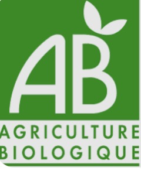
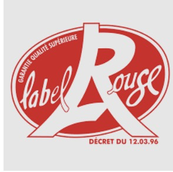
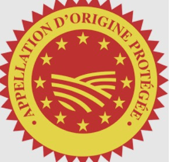
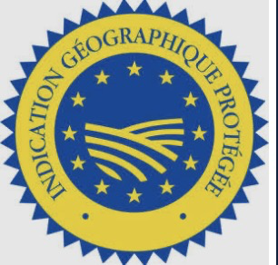
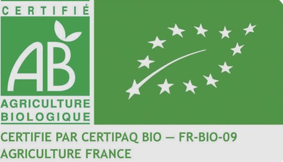

« à consommer jusqu'au » : date limite, risque pour la santé après. « de préférence avant » : le produit perd en qualité, pas en sécurité.
Derrière chaque paquet : une origine, des logos, une étiquette. Savoir les lire, c'est choisir en connaissance de cause — pour sa santé et pour son budget.
« à consommer jusqu'au » : date limite, risque pour la santé après. « de préférence avant » : le produit perd en qualité, pas en sécurité.
AOP : toutes les étapes dans la même zone. IGP : une seule étape suffit.
Il note l'équilibre nutritionnel et rien d'autre. Ni l'origine, ni le mode de production, ni le bio.
Velouté de tomates — SPÉCIMEN PÉDAGOGIQUE
| Mention obligatoire | Sur l'étiquette (spécimen) | ||||||||||
|---|---|---|---|---|---|---|---|---|---|---|---|
| 1Dénomination | Velouté de tomates au basilic — soupe prête à consommer | ||||||||||
| 2Ingrédients (ordre décroissant) | Eau, purée de tomates 38 %, crème 6 %, oignon, sel, amidon de maïs, basilic 0,3 %, sucre, arôme naturel, antioxydant : E300. | ||||||||||
| 3Quantité nette | 1 L (1 000 ml) — 4 portions | ||||||||||
| 4Date | À consommer jusqu'au : 18/09/2026 | ||||||||||
| 5Conditions de conservation | À conserver entre 0 et +4 °C. Après ouverture, consommer sous 48 h. | ||||||||||
| 6Fabricant et lot | Conserverie du Val, 26200 Montélimar — Lot L26-4471 | ||||||||||
| 7Déclaration nutritionnelle — pour 100 ml |
|
Facultatif : marque, code-barres, Nutri-Score, mode d'emploi
Les additifs sont codés : colorants E100, conservateurs E200, antioxydants (antioxygènes) E300.
On mange moins cher en proportion du budget, mais on attend autre chose du produit : bio, local, de saison, traçabilité, lutte contre le gaspillage.
| Logo | Signe | Ce qu'il garantit | Exemple |
|---|---|---|---|
 |
AB / Eurofeuille Agriculture biologique |
Une production sans produits chimiques de synthèse ni OGM, selon un cahier des charges européen. Pour un produit transformé, les ingrédients doivent être bio. L'Eurofeuille est obligatoire sur les produits bio préemballés ; le logo AB, français, est facultatif. |
Œufs, légumes, farine |
 |
Label Rouge Qualité supérieure |
Une qualité gustative supérieure à celle d'un produit courant de la même catégorie, établie par des tests. | Volaille, saumon, fraises |
 |
AOP / AOC Appellation d'origine |
Toutes les étapes de production et de transformation ont lieu dans la même aire géographique, avec un savoir-faire reconnu. | Lentille verte du Puy |
 |
IGP Indication géographique |
Au moins une étape a lieu dans l'aire géographique, dont le produit tire sa réputation. | Jambon de Bayonne |
| aucun logo officiel | Commerce équitable Démarche privée |
Un prix minimum garanti au producteur, souvent dans un pays en développement, et des conditions d'achat stables. Il contribue au développement durable, mais il ne dit rien sur l'origine ni sur la qualité du produit. | Café, cacao, bananes |
Ces signes sont reconnus par l'État (INAO) et par l'Union européenne ; les contrôles sur le terrain sont réalisés par des organismes certificateurs agréés. Une marque commerciale, elle, n'engage que l'entreprise qui la dépose : elle ne garantit ni composition, ni origine.

Calculé pour 100 g ou 100 ml. Facultatif en France : son absence ne veut rien dire. Il sert à comparer deux produits d'une même catégorie — deux céréales du petit-déjeuner entre elles, pas des céréales avec un fromage. Il ne remplace pas la lecture de l'étiquette et ne dit rien de l'origine ni du mode de production.
Deux pots de confiture de fraises. Lequel est le moins cher ?
1Un yaourt affiche « à consommer jusqu'au 12/03 ». Nous sommes le 14/03. Que fais-tu, et pourquoi ?
C'est une DLC : la date est dépassée, le produit présente un risque pour la santé. On ne le consomme pas.
2Sur une liste d'ingrédients, le sucre est écrit en premier. Qu'est-ce que cela t'apprend ?
La liste est classée par ordre décroissant : le sucre est l'ingrédient le plus présent dans le produit.
3Un produit affiche un Nutri-Score A. Est-il forcément bio ? Justifie.
Non. Le Nutri-Score note seulement l'équilibre nutritionnel ; il ne dit rien du mode de production. Seul le logo AB garantit le bio.
4Quelle est la différence entre AOP et IGP ?
AOP : toutes les étapes ont lieu dans la même aire géographique. IGP : au moins une étape suffit.
5Un paquet de riz de 800 g coûte 2,96 €. Calcule le prix au kilo.
800 g = 0,800 kg ; 2,96 ÷ 0,800 = 3,70 €/kg.